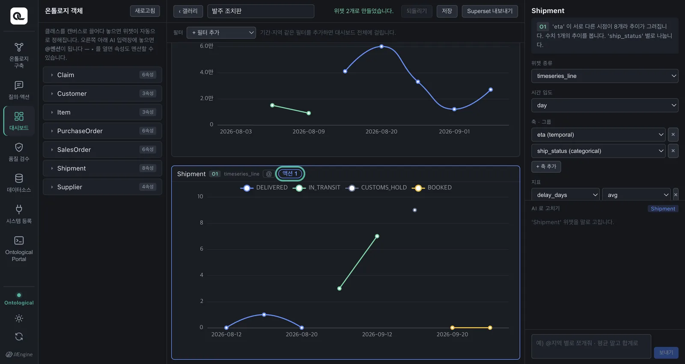
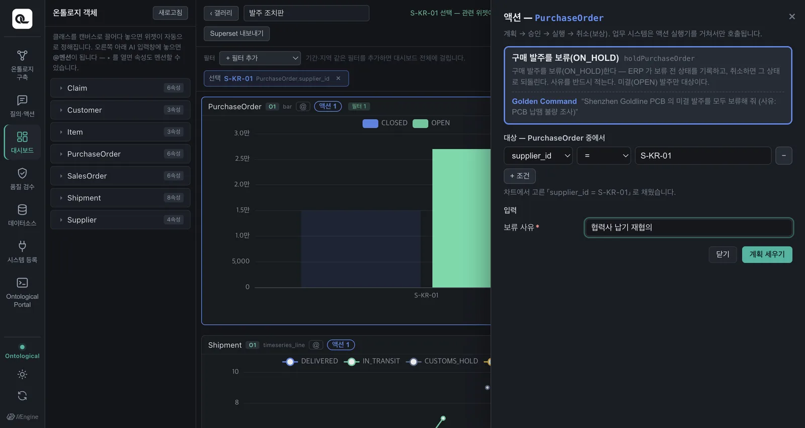
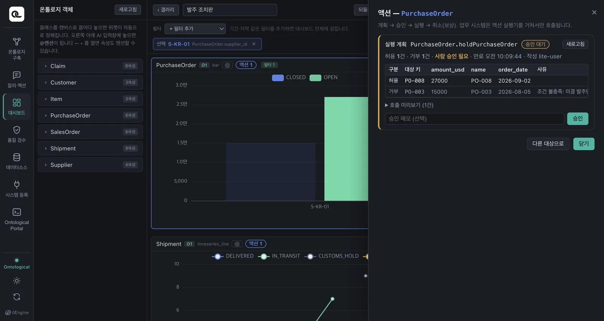
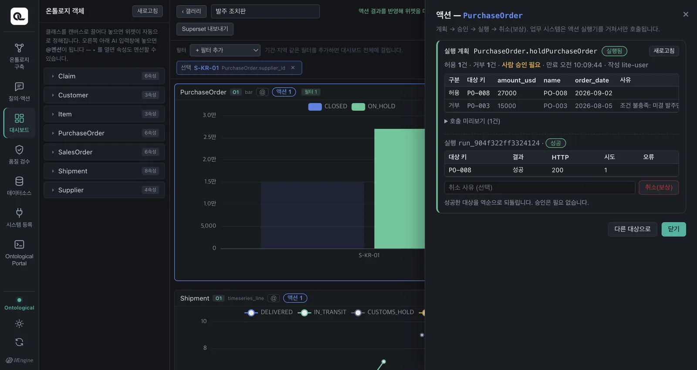
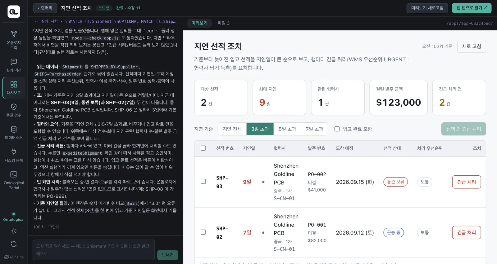
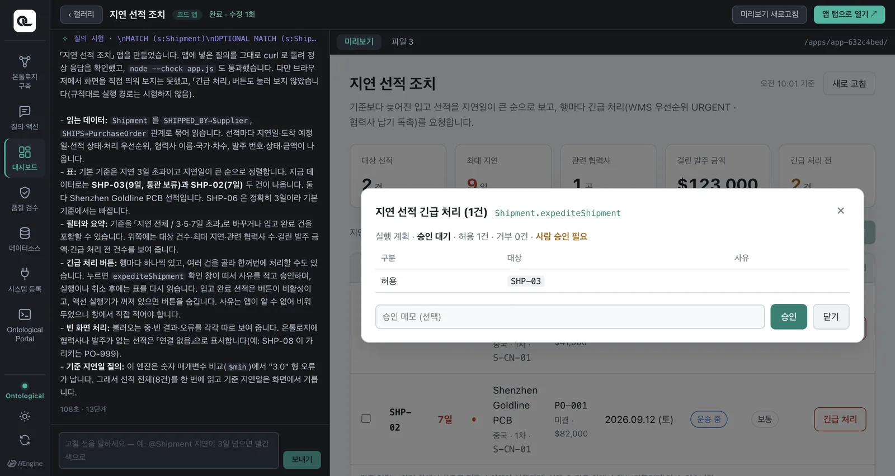
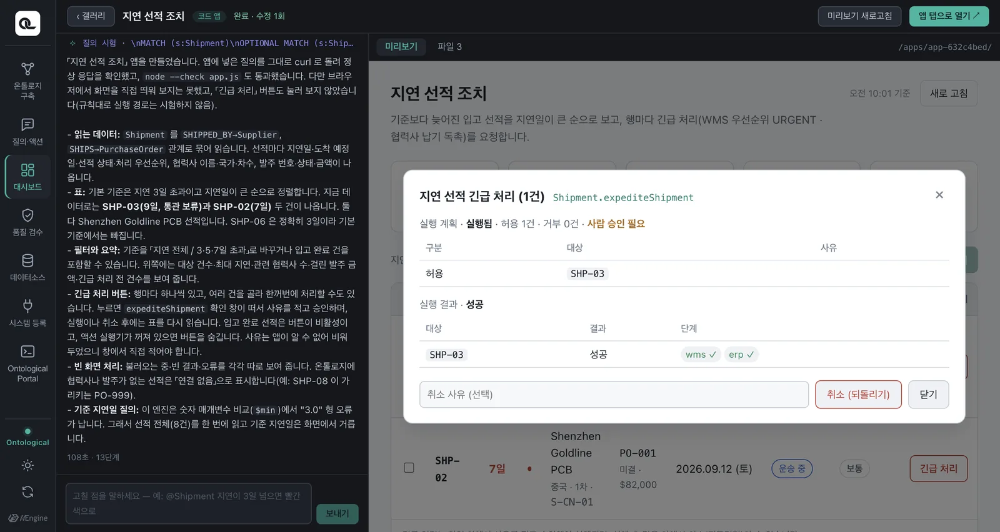
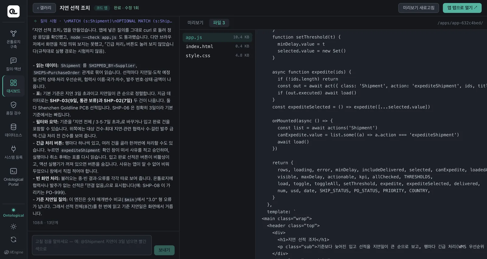

온톨로지에 행위(액션)가 있으면, 대시보드 위젯과 코드 앱에 그 행위를 실행하는 버튼이 생깁니다. 버튼으로 실행할 때도 채팅과 마찬가지로 계획 → 승인 → 실행 → 취소 절차를 거칩니다. 골든 퀘스천이 앱이 무엇을 보여 줄지를, 골든 커맨드가 앱이 무엇을 할 수 있을지를 정합니다.
0.1.1의 새 기능
이 장의 기능(위젯의 액션 버튼, SDK의 actions()·act())은 Ontological Studio 0.1.1부터 들어 있습니다. 0.1.0을 쓰고 있다면 릴리스 페이지에서 새로 받으세요. 화면은 시연 영상에서 가져왔습니다(밤 테마).
왜 앱에 버튼이 필요한가#
대시보드에서 늦은 선적을 발견했다면, 다음 할 일은 “그 선적을 긴급 처리”하는 것입니다. 질의·액션 탭으로 옮겨 가서 다시 말로 지시하는 대신, 보고 있는 화면에서 바로 할 수 있어야 합니다. 그렇다고 앱이 업무 시스템을 마음대로 부르면 안 됩니다. 그래서 버튼은 채팅의 계획 카드와 같은 길(액션 실행기)을 씁니다.
| 지켜지는 것 | 어떻게 |
|---|---|
| 앱은 업무 시스템을 직접 부르지 않는다 | 버튼은 액션 실행기의 계획·승인·실행만 부릅니다 |
| 정책 | 대상마다 판정, 거부 사유 표시 |
| 사람의 승인 | 승인·실행·취소는 사람이 창에서 누를 때만 일어납니다 |
| 되돌리기 | 같은 창에서 취소(역순 보상) |
대시보드의 액션 버튼#
위젯이 보여 주는 클래스에 발행된 액션이 있으면, 위젯 상단에 「액션 N」 버튼이 붙습니다. 이 화면을 쓰는 사람의 권한으로 쓸 수 있는 액션만 보입니다.

- 발주 위젯을 협력사별 금액 막대로 두되, 상태(status)를 계열로 나눠 둡니다(AI에게 “상태별로 색을 나눠 줘”라고 하면 됩니다. 17장의 합계 막대 그대로라면 OPEN → ON_HOLD 변화가 막대에 보이지 않습니다). 협력사
S-KR-01의 막대를 누릅니다. 이 값이 대시보드의 선택이 됩니다. - 「액션」 버튼을 누르면 오른쪽에 서랍이 열립니다. 발주 보류 액션과 그것을 만든 골든 커맨드가 함께 보이고, 대상 조건은 방금 고른 협력사로 채워져 있습니다. 보류 사유만 적습니다.
- 「계획」 — 대상마다 정책이 판정합니다. 미결인 PO-008은 허용, 이미 닫힌 PO-003은 “미결 발주만” 정책으로 거부됩니다.
- 「승인」 → 「실행」 — ERP가 발주를 보류하고, 서랍 옆의 막대가 곧바로 다시 그려집니다(OPEN → ON_HOLD).
- 「취소」 — 보상(ERP 보류 해제)이 실행되고 막대가 다시 OPEN으로 돌아옵니다.



코드 앱의 액션 버튼#
코드 앱을 만들 때, 에이전트의 프롬프트에는 그 온톨로지의 액션과 골든 커맨드 목록이 함께 들어갑니다. 그래서 에이전트는 어느 행에 어떤 버튼을 달지 압니다.
3일 넘게 늦어진 @Shipment 을 지연일이 큰 순으로 보여 주고, 행마다 긴급 처리 버튼을 달아 줘

버튼을 누르면 SDK가 띄우는 확인 창이 뜹니다. 앱 코드가 그린 창이 아니라 SDK의 창이라 어떤 앱에서도 같은 모습이고, 앱이 흉내 낼 수 없습니다. 골든 커맨드, 대상, 사유를 확인하고 계획 → 승인 → 실행합니다.


창을 닫으면 앱이 데이터를 다시 읽어, 그 선적의 우선순위가 “긴급”으로 바뀐 것이 보입니다.
코드로 보면#
버튼에서 SDK의 act() 함수를 호출합니다.
import { query, actions, act } from '/apps/_runtime/og.js'
// 이 클래스에 쓸 수 있는 액션이 있을 때만 버튼을 그린다 (실행기가 꺼져 있으면 빈 배열)
const canExpedite = (await actions('Shipment')).some(a => a.action === 'expediteShipment')
async function expedite(row) {
const out = await act({
class: 'Shipment',
action: 'expediteShipment',
ids: [row.shipment_no], // 액션의 대상 키 값 (여러 개를 한 번에 넘겨도 됨)
params: { reason: '생산 차질 우려' }, // 모르는 필수 입력은 빼 두면 창이 입력란을 보여 준다
})
if (out.executed) await load() // 실행·취소했으면 데이터를 다시 읽는다
}

act() 인자 |
뜻 |
|---|---|
class, action |
실행할 액션 |
ids |
대상 키 값의 배열 (예: 선적 번호) |
where |
ids 대신 조건으로 대상 고르기: [{prop: 'delay_days', op: '>', value: 3}] |
params |
입력값. 필수 입력을 빼면 창이 입력란을 보여 줍니다 |
| 반환값 | 창이 닫히면 { executed, cancelled, plan, run } |
에이전트는 실행 경로를 시험하지 않습니다
코딩 에이전트는 질의는 직접 시험하지만, 계획·승인·실행은 시험하지 않습니다 — 실제 업무 시스템이 바뀌기 때문입니다. 액션 목록만 확인하고 버튼을 답니다. 승인 요청은 브라우저 화면에서 온 것만 받고, 에이전트의 터미널 호출은 거절됩니다.
정리 — 질문과 지시가 앱이 되기까지#
| 구축할 때 적은 것 | 만들어진 것 | 앱에서 |
|---|---|---|
| 골든 퀘스천 | 클래스·관계·속성 | 대시보드 위젯, 코드 앱의 질의 |
| 골든 커맨드 | 액션(단계·보상·정책) | 위젯의 액션 버튼, 코드 앱의 act() 버튼 |
실습 과제
- 「공급망 현황판」 대시보드의 발주 위젯에서 액션 버튼으로 한 협력사의 미결 발주를 보류하고, 취소해 보세요.
- 코드 앱으로 “PCB 납땜 불량 클레임을 낸 고객 목록과, 행마다 조치 안내 보내기 버튼”을 만들어 보세요. 어떤 액션이 쓰이나요?
정답 보기
Customer.notifyCustomer(골든 커맨드 “PCB 납땜 불량 클레임을 낸 고객에게 조치 안내를 보내 줘”). 필수 입력이 제목과 본문 두 개라, 앱이 모르면 확인 창이 입력란을 보여 줍니다. 보상은 CRM의 안내 철회입니다.